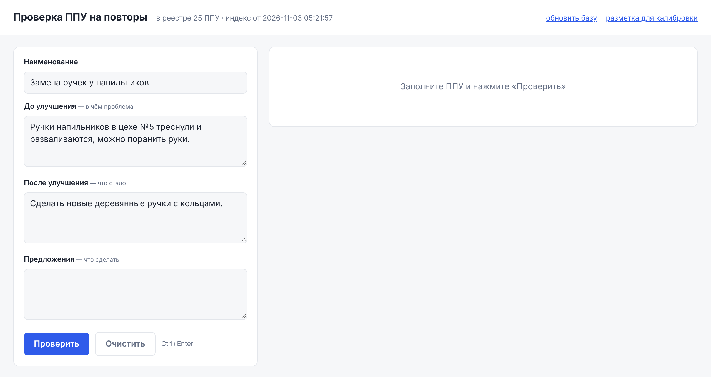
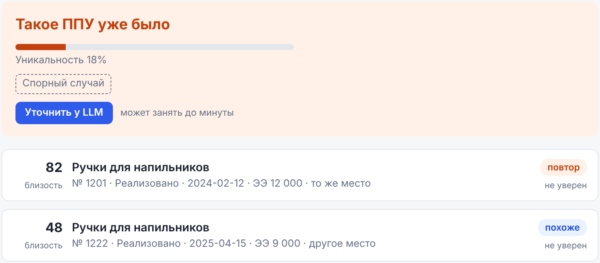
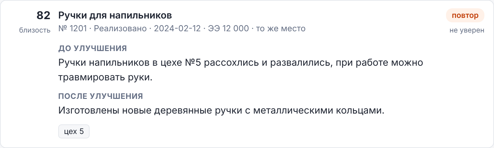
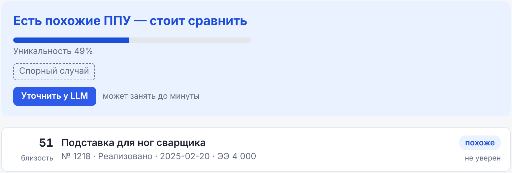
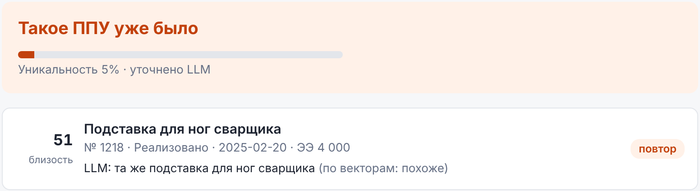
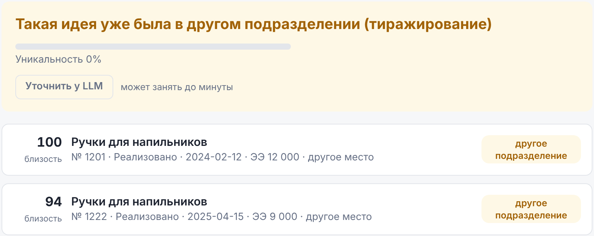
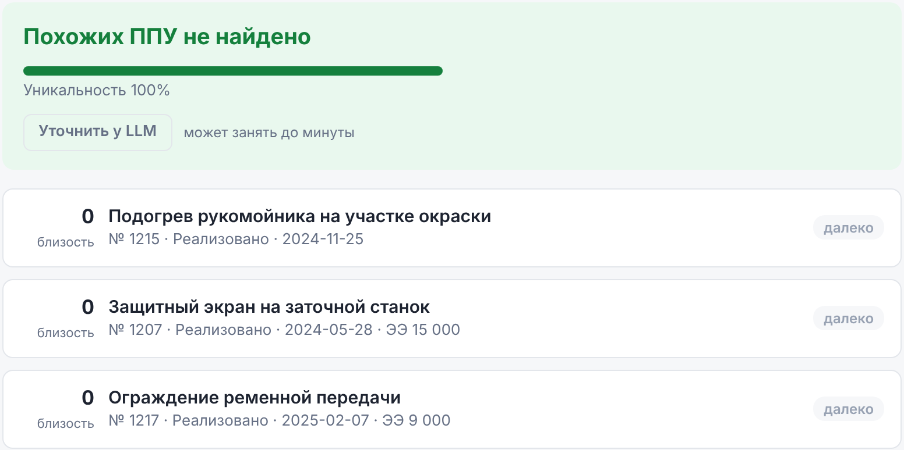
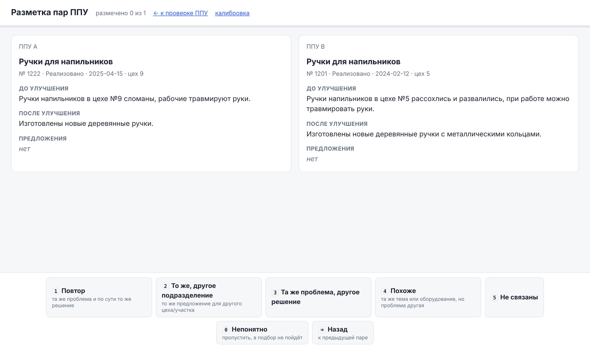

Как за минуту понять, подавали ли уже такое предложение по улучшению, и как читать ответ сервиса.
Коротко. Вставляете текст нового ППУ, нажимаете «Проверить». Сервис находит в реестре похожие ППУ и подсказывает: повтор, тиражирование, другое решение той же проблемы или что-то новое. Решение принимаете вы: сервис только подсказывает.
В реестре предложений по улучшению — тысячи записей. Вручную понять, предлагал ли кто-то то же самое раньше, долго: одно и то же можно описать совсем разными словами.
Сервис читает новое ППУ и сравнивает его по смыслу, а не по совпадению слов, со всеми ППУ в реестре. Например, «ручки напильников треснули» и «ручки инструмента развалились, можно поранить руки» он считает близкими.
Где открыть. Сервис работает в обычном браузере (Chrome, Edge, Яндекс), ничего устанавливать
не нужно. Адрес — http://srv-ai:8010 или тот, который сообщил ответственный за сервис.
Безопасность. Сервис и все его модели работают на заводском сервере. Тексты ППУ за пределы завода не уходят.

Чем полнее описание, тем точнее ответ. По одному названию сервис часто может сказать только «похоже». Когда есть проблема и решение, он отличает настоящий повтор от другого решения той же проблемы.
Номер цеха, участка, проекта пишите как в заявке («цех №5», «участок сборки»). По ним сервис отличает повтор от той же идеи в другом подразделении.
Ответ состоит из двух частей: общий вывод (цветная плашка вверху) и список найденных ППУ под ним.

| Что написано | Что это значит и что делать |
|---|---|
| Такое ППУ уже было | В реестре есть ППУ с той же проблемой и по сути тем же решением, в том же месте (или место не указано). Откройте карточку и сравните тексты. |
| Такая идея уже была в другом подразделении (тиражирование) | То же предложение уже подавали, но для другого цеха или участка. Это может быть законное тиражирование. Решение — по правилам вашего подразделения. |
| Эта проблема уже поднималась, но с другим решением | Проблему уже описывали, но предлагали решать иначе. Это не повтор, но полезно знать о прошлом решении. |
| Есть похожие ППУ — стоит сравнить | Есть ППУ на ту же тему или про то же оборудование, но, похоже, про другое. Просмотрите карточки. |
| Похожих ППУ не найдено | Ничего близкого по смыслу в реестре нет. Скорее всего, предложение новое. |
От 0 до 100%. Чем больше, тем новее предложение. Около 0% — почти наверняка уже было, около 100% — ничего похожего не найдено.
Спорный случай — сервис сомневается в своём выводе. В этом случае лучше нажать «Уточнить у LLM» (раздел 4) или внимательно сравнить тексты самому.

| Элемент | Что означает |
|---|---|
| Число «близость» | От 0 до 100: насколько найденное ППУ близко к новому по смыслу. Чем больше, тем ближе. |
| Строка под названием | Рег. номер, статус в реестре, дата подачи, экономический эффект (ЭЭ), и отметка о месте: «то же место», «другое место» или «место в найденном не указано». |
| «в реестре только название» | У этого ППУ в реестре нет описания (например, «См.вложение»). Сервис судит только по названию, поэтому точность ниже — откройте вложение в реестре. |
| Метка справа | Как это ППУ приходится новому, см. таблицу ниже. |
| «не уверен» | Сервис сомневается в метке именно этой карточки. |
| Цех, участок, проект | Внизу раскрытой карточки — что сервис нашёл в тексте: цех, участок, проект, модель, инвентарный номер. |
| Метка | Что означает |
|---|---|
| повтор | То же предложение: та же проблема и по сути то же решение. |
| другое подразделение | То же предложение, но для другого цеха или участка. |
| та же проблема, другое решение | Проблема та же, решение принципиально другое. |
| похоже | Та же тема или то же оборудование, но проблема другая. |
| далеко | Связи нет. Такие ППУ показываются, только если ничего ближе не нашлось. |
Обычная проверка — быстрая: сервис сравнивает общий смысл текстов. Иногда этого мало, например, когда тексты про одно и то же, но написаны очень по-разному, или когда тема одна, а суть разная.
Для таких случаев есть кнопка Уточнить у LLM. LLM — языковая модель, «электронный эксперт», который читает новое ППУ и найденные ППУ целиком, как человек, и для каждого объясняет связь в нескольких словах.


Когда нажимать. Обязательно — при «Спорном случае». По желанию — в любой момент, если вывод вызывает сомнения: модель тоже может ошибаться, но ошибается иначе, чем быстрая проверка.
Если кнопки нет совсем — модель на сервере не подключена; работает только быстрая проверка.


Примеры на снимках выдуманные — на настоящем реестре названия и номера будут другими.
| Что видите | Что делать |
|---|---|
| Страница не открывается | Проверьте адрес. Если не помогло — сервис выключен или сервер перезагружается; подождите 5 минут и обновите страницу. Дальше — к ответственному. |
| В шапке «сервер недоступен» | Обновите страницу (F5). Не помогло — к ответственному. |
| «Базы ППУ ещё нет — загрузите реестр» | Реестр в сервис ещё не загружен. Сообщите ответственному. |
| «Не удалось проверить: …» | Повторите через минуту. Если ошибка повторяется — пришлите ответственному снимок экрана с текстом ошибки. |
| «Уточнить у LLM» думает дольше 2–3 минут | Нажмите «Отменить» и повторите позже: модель могла быть занята другим запросом. |
| Вывод явно неверный | Сообщите ответственному: какой текст проверяли и что ожидали. Такие примеры помогают настроить сервис. |
Иногда сервису нужна помощь людей, чтобы лучше отличать «повтор» от «похоже» именно на вашем реестре. Если вас попросили помочь — откройте ссылку «разметка для калибровки» в шапке главной страницы.

| Клавиша | Ответ | Когда выбирать |
|---|---|---|
| 1 | Повтор | Та же проблема и по сути то же решение. |
| 2 | То же, другое подразделение | То же предложение, но для другого цеха или участка. |
| 3 | Та же проблема, другое решение | Проблема одна, решения разные. |
| 4 | Похоже | Та же тема или оборудование, но проблема другая. |
| 5 | Не связаны | Ничего общего. |
| 0 | Непонятно | Не получается решить (например, у обеих ППУ только общее название). Такие пары не учитываются. |
| ⌫ | Назад | Вернуться к предыдущей паре и исправить ответ. |
Ответ сохраняется сразу — можно прерваться в любой момент и продолжить позже. Вверху виден прогресс «размечено N из M». Отвечайте так, как ответили бы на комиссии, не думая о том, что «скажет сервис».